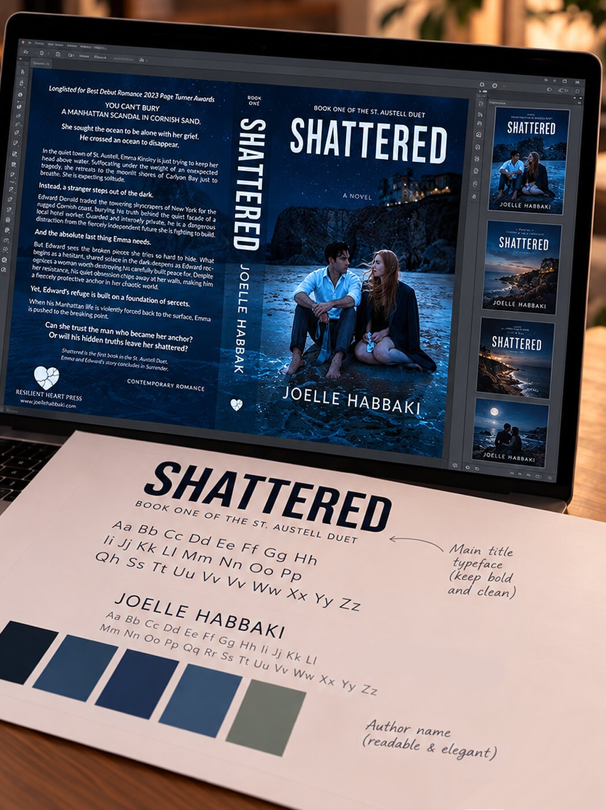

The Invisible Work Behind a Published Book
What happens after the manuscript is finished, and before a book is ready to find its readers. Inside the editorial, creative, technical and commercial work that turns a manuscript into a published book.

The manuscript may be finished. The book is not.
Finishing a manuscript feels like an ending.
In publishing, it is also the point at which an entirely different kind of work begins.
Before a reader can hold a book, download it or listen to it, the manuscript has to pass through a series of editorial, creative, technical and commercial decisions. Some are immediately visible: the cover, the typography, the physical form of the book. Others remain almost completely hidden: metadata, identifiers, file specifications, distribution information, territorial settings and the systems that allow one title to exist in several formats and places at once.
A manuscript is the story in its written form.
A published edition is that story prepared to function in the world.
The distinction matters because publishing is not simply the act of making writing available. It is the process of turning a manuscript into an edition that can be read, sold, catalogued, distributed, identified and maintained.
For many books, those stages overlap. Cover work may begin while final edits are still underway. Metadata can evolve as positioning becomes clearer. Print specifications influence design. Distribution choices can affect pricing, formats and production decisions.
The process is rarely a perfectly straight line.
But every decision moves the manuscript closer to becoming a book a reader can experience.
Editorial work strengthens the manuscript without changing its voice.
A manuscript can be complete and still not be ready for publication.
That does not mean the story has failed. It means writing and publishing ask different questions of the same work.
During the writing process, an author is often immersed in character, emotion, pacing, voice, plot and the larger experience of the story. Once the manuscript enters the editorial process, the perspective changes. The question is no longer only what the author intended, but whether that intention is reaching the reader clearly, consistently and at the right moment.
Editorial review begins testing how the manuscript works as a whole. It looks at what each scene contributes, when information reaches the reader, whether character choices remain convincing, and how effectively the prose supports the rhythm and emotional movement of the story.
The goal is not to overwrite the author’s voice or turn the manuscript into something else. Effective book editing builds on what is already there, helping structure, language and continuity support the story the author meant to tell.
Different stages of editing address different levels of the manuscript. Structural or developmental work may consider the book as a whole. Line editing looks more closely at the movement and effectiveness of the prose. Copyediting examines consistency, grammar, usage and factual or textual details. Proofreading becomes the final check once the book has taken its designed form.
Those stages are related, but they are not interchangeable.
A beautifully proofread sentence can still belong to a scene that should have been cut. A structurally sound novel can still contain inconsistent punctuation, repeated words or errors introduced during production.
This is why editorial work often becomes less visible as it becomes more successful.
The reader should not be thinking about the edit.
The reader should be inside the book.
Before a book can enter the world, it has to take a form.
A story may begin as words on a page.
Publishing requires it to take a form.
At some point in the publishing process, decisions have to be made about how the work will exist for the reader or listener.
For a print edition, that can include trim size, page dimensions, margins, typeface, line spacing, chapter openings, running heads, page numbers, paper, binding and cover construction. The width of the spine depends on the page count and production specifications. The print cover has to account not only for the front image, but also for the back cover, spine, bleed and the practical requirements of manufacturing.
An ebook asks different questions. The text must respond to different screen sizes, devices and reader settings. Elements that behave predictably on a printed page may need to function differently in a reflowable digital file.
An audiobook transforms the work again.
Now the story exists through voice, pacing, pronunciation, performance, recording, editing and audio production. The text has not changed, but the way the audience experiences it has.
One title can therefore exist in several formats and editions, all carrying the same story while functioning differently.
That is part of what makes book production more complex than the finished product suggests.
The cover is not simply an image.
The interior is not simply the manuscript placed between two covers.
The ebook is not merely a PDF of the printed book.
Each format has to work on its own terms.
A book begins communicating before the first sentence is read.
The visual identity of a book begins communicating long before a reader opens it.
Genre, tone, atmosphere, audience and emotional promise can all be suggested by colour, typography, imagery, composition and even the amount of visual restraint on the page.
A book cover has an unusually difficult job.
It has to belong to the story while also functioning in places where the story itself is absent.
It may appear as a full-size paperback in a bookstore, a small thumbnail on a retailer page, an image in a catalogue, a square crop on social media or a tiny recommendation beside several competing titles.
The cover therefore has to remain legible, recognizable and compelling across all of those contexts.
Interior design works more quietly.

Readers may never consciously notice a well-designed page, but they can feel when one is difficult to read. Typography, spacing, hierarchy, margins and page structure all influence the rhythm and ease of the reading experience, even when the reader never thinks about those choices directly.
That quietness is part of the craft.
This information is grouped under the broad term metadata.
To a reader, book metadata can sound administrative. Within publishing, it forms part of a title’s identity.
Metadata tells publishing systems what the book is, who created it, how it should be classified, which format or edition is being referenced, where it can be sold and how it should be represented.
The same title may require separate metadata for paperback, hardcover, ebook and audiobook formats. Each is a distinct publishing product with its own specifications and, where applicable, its own identifiers.
Small inconsistencies can create practical problems.
A subtitle that differs from one platform to another, an incorrect contributor name, a mismatched publication date or inaccurate category information can affect how a book is catalogued, displayed and understood across the systems carrying it.
Metadata therefore occupies an integral place within publishing.
It is largely invisible to the reader.
Yet it helps determine whether a book can be correctly identified, discovered, distributed and handled before the reader ever reaches it.
A finished design still has to become a production-ready file.
A cover can look complete on a designer's screen and still not be ready for production.
A manuscript can be fully edited and beautifully formatted and still require technical preparation before it can be printed, uploaded or distributed.
Every format comes with its own production requirements.
Print files must account for trim size, bleed, image resolution, fonts, colour handling and the specifications of the chosen printing method. Interior files have to align precisely with the dimensions and construction of the finished book. Ebook files need to function reliably across different devices, screen sizes and reading environments.
Then comes proofing.
A physical proof can reveal things that were difficult to detect on screen. A colour may print darker than expected. A spine element may sit too close to a fold. An image may reproduce differently in print. A paragraph can create an awkward page break, or a final correction can shift pagination and alter a chapter opening several pages later.
Digital editions need their own checks.
Navigation, links, spacing, chapter breaks and text behaviour can all change once a file leaves the software in which it was created and is opened on different devices or reading platforms.
This is one reason book production often involves repeated rounds of review. A correction in one place can affect something elsewhere, which means a file that was checked once may need to be checked again after changes are made.
The book moves from manuscript to design, from design to production file, from file to proof and sometimes back again.
Each stage can reveal something the previous stage could not.
Production creates the edition. Distribution gives it somewhere to go.
Once the files are ready, another layer of publishing begins.
A finished edition still has to enter the systems through which retailers, libraries, distributors and ultimately readers can access it.
Depending on the format and publishing strategy, that may involve ebook retailers, print-on-demand services, wholesalers, library suppliers, audiobook platforms, subscription services or direct sales channels.
Each relationship has its own requirements.
Files have to be supplied in the correct format. Metadata has to travel with them. Pricing must be set. Territories have to reflect the rights available. Publication dates, availability settings and distribution terms all have to be coordinated.
From a reader’s perspective, a book can appear simply to exist wherever they look for it.
Behind that apparent simplicity may be several separate platforms, distributors and retail systems carrying information about the same title.
This is where publishing begins to resemble infrastructure rather than a single act.
The edition exists.
Now it has to travel.
A book can be everywhere and still remain unseen.
Distribution solves one problem.
It does not solve all of them.
Making a title available means a reader can potentially obtain it.
Discovery is the separate challenge of helping that reader find it, notice it and become interested enough to look closer.
That can happen through many routes.
The publishing work therefore changes again once the book enters the market.
The focus moves from building the edition to creating opportunities for it to be noticed.
Marketing and publicity are often treated as though they begin at publication.
In practice, many of the decisions that influence discovery were made much earlier.
The title, cover, description, categories, metadata, positioning and distribution channels all affect how easily a book can be found, understood and considered by the readers it was created for.
Discovery creates the possibility of connection.
Publication is a date. Publishing is a lifecycle.
A publication date can make a book feel finished.
The files are live. Copies can be ordered. Retail listings are active. The title has entered the world.
But publication does not freeze a book in time. Titles can continue to evolve long after release day.
A book that has been available for years can become newly relevant because of another release, an award, a cultural moment, a reader community or a change elsewhere in the author's catalogue.
Publishing therefore has a longer memory than launch day.
The work required to create and maintain the original edition becomes the foundation for what may happen to the title later.
This becomes especially visible as a backlist grows.
One book becomes two.
Two become several.
Covers begin relating to one another. Metadata has to remain consistent. Series information matters. Rights have to be tracked. Older editions may need maintenance as technology, retail requirements or distribution systems change.
What began as a single publication becomes part of a catalogue.
And a catalogue has a life of its own.
The reader sees one thing.
By the time a book reaches a reader, most of the work that made it possible has disappeared from view.
The edit has become the sentence.
The typography has become the page.
The cover has become the first impression.
The metadata has become information moving through publishing systems.
Production has become a finished edition.
Distribution has become availability.
None of those things is the story itself.
But each creates the conditions through which the story can be experienced
by a reader.
That may be the quiet success of publishing.
The more coherent the finished book becomes, the less visible the machinery behind it needs to be.
A reader does not have to know how many decisions were made about the manuscript, the files, the cover, the metadata, the format or the distribution path.
They only need the result to feel whole.
A finished book conceals the work that made it possible.
Editorial, design, metadata, production and distribution decisions no longer announce themselves once the book is complete. They resolve into one coherent reading experience.
When all of those decisions work together, the reader does not see the machinery.